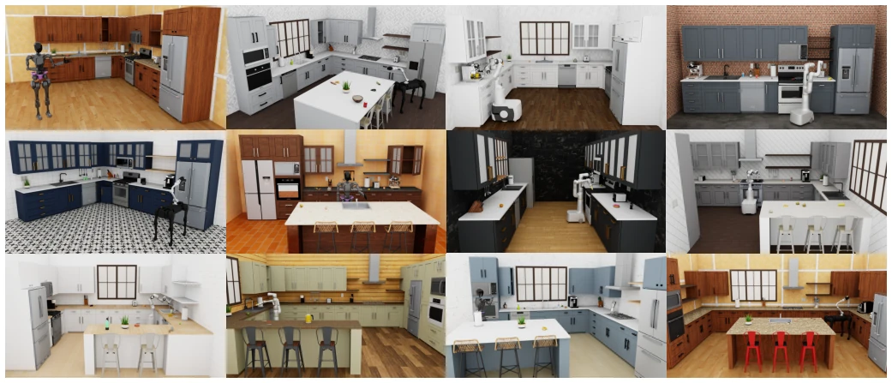
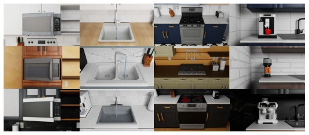
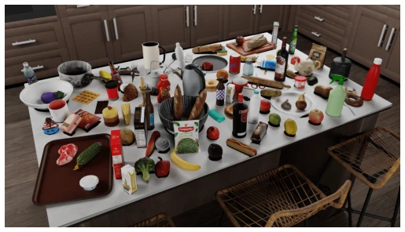
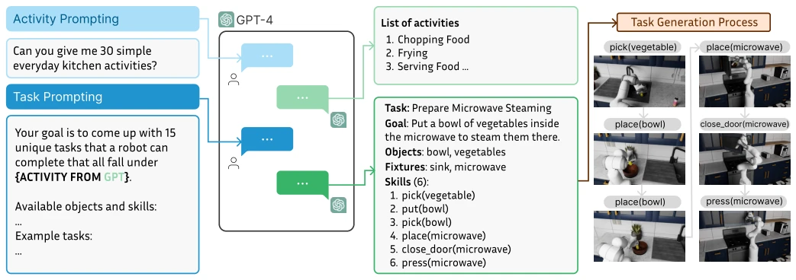
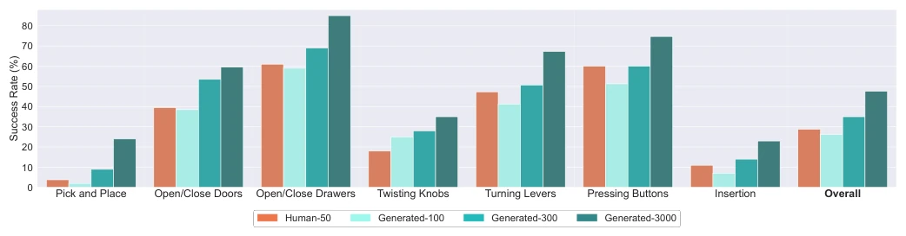
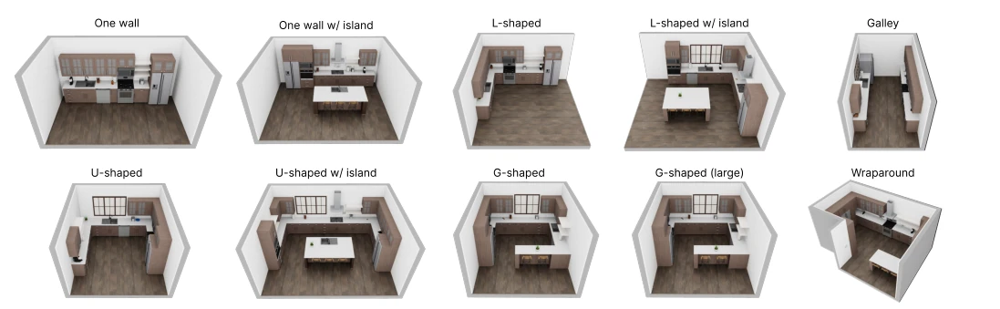

RoboCasa claims to be a "general robot" training ground, yet it is essentially a "kitchen simulator". While 100,000 trajectories appear impressive, all 120 scenes are kitchens, 2,500 objects are entirely AI-generated, and the physics engine relies on the legacy of RoboSuite. Most ironically, for composite tasks generated by LLMs, the robot remains "clumsy" despite extensive learning, with a real-world transfer success rate of only 24%. This is slightly better than pure simulation data but far from "general". However, using GenAI to generate assets and tasks does save manual effort, which is commendable. It attempts to address data scarcity in robot learning via simulation data. Although composite task performance is subpar, it demonstrates the effectiveness of synthetic data scaling on atomic skills. For the community pursuing large-scale pre-training, this is a solid benchmark, but do not expect it to immediately produce robots capable of cooking.
The robotics field suffers from data scarcity, unlike CV/NLP which benefits from massive internet data [2]. Existing large-scale datasets such as Open X-Embodiment [5] or Behavior-1K [27] largely rely on real-world collection or simple simulation, resulting in high costs and poor generalization. RoboCasa aims to address the "scaling" problem through high-fidelity simulation; however, existing simulators like AI2-THOR [21] or Habitat [40] lack physical realism and object diversity, hindering complex task learning. We require an environment capable of generating massive data while preserving physical interaction fidelity, otherwise, trained policies will fail to transfer to the real world.

Fig. 1: Overview of RoboCasa. RoboCasa is a simulation framework for training generalist robot agents. Four pillars underlie RoboCasa: (1) Diverse assets, including 120 kitchen scenes and 2,500+ 3D objects, created with the aid of generative AI tools; (2) Cross-embodiment support for mobile manipulators and humanoid robots; (3) Diverse tasks created with the guidance of large language models; (4) Massive training datasets with over 100K trajectories.
The core is built upon RoboSuite. First, regarding scene construction, the authors consulted home magazines to design 120 kitchen layouts covering various styles, with textures generated via MidJourney to enhance visual diversity. Second, the asset library includes 2,500+ objects, with 3D models generated from text via Objaverse [8] and Luma.ai to ensure object richness. In terms of task design, LLMs generate high-activity lists, which are then refined into 100 specific tasks, including 75 composite tasks. Data collection employs a "human demonstration + synthetic augmentation" strategy: initially collecting 50 human demonstrations, then expanding to 100,000 trajectories using MimicGen [34]. Finally, policy training utilizes BC-Transformer for imitation learning to verify the impact of synthetic data on policy generalization.

Fig. 4: Examples of Interactable Appliances. Our simulation framework comes with dozens of appliances. Several types of appliances are articulated. For example, we can open and close doors on microwaves and twist knobs on stoves. Some appliances can undergo state changes, e.g., when we turn the knob on the stove, the corresponding burner turns on.

Fig. 5: Diverse High-Quality 3D Objects. RoboCasa offers 2,509 high- quality 3D objects across 153 diverse categories spanning vegetables, poultry, drinks, and more. Here we illustrate a small subset of these objects.

Fig. 6: Creating Diverse Tasks with Large Language Models. We employ LLMs to generate diverse tasks. First, we prompt GPT-4 to give diverse high-level kitchen activities. Subsequently, for each activity, we prompt GPT-4 (or Gemini 1.5) to suggest a diverse set of representative tasks. We illustrate one such task “Preparing the Microwave For Steaming” for the activity label “Steaming Vegetables”.

Fig. 7: Comparison between human demonstrations and machine-generated datasets. We present learning results across 24 atomic tasks spanning diverse robot skills. We compare training on four different multi-task datasets, including a human dataset with 50 demonstrations per task, a machine generated dataset with 3000 demonstrations per task, and smaller variants with 300 or 100 demonstrations per task. We group task results according to their corresponding sensorimotor skills (see Figure 13 for a full breakdown of results by task). We see a clear scaling trend: increasing the size of the generated dataset can yield consistently higher overall success rates, eventually significantly outperforming performance on human datasets.
The experiments are divided into three parts. Atomic task evaluation shows that models trained with synthetic data exhibit increasing success rates as data volume grows, eventually surpassing human demonstration data [Fig 7]. In composite task evaluation, policies fine-tuned after pre-training on atomic tasks outperform those trained from scratch, yet success rates remain low, suggesting long-horizon planning is still a challenge [Fig 8]. In real-world transfer experiments, on the Franka robot, models trained with combined simulation data achieved a success rate of 24.4% on real kitchen tasks, significantly outperforming the 13.6% achieved using only real data [Fig 10]. This demonstrates that large-scale simulation data can effectively assist Sim-to-Real transfer, though generalization capabilities for complex tasks require further improvement.
其他图片Other Figures

Fig. 3: Kitchen Floor Plans. We consult home planning and architecture magazines and compile a list of common kitchen floor plans. Our floor plans take on a variety of shapes and sizes, from basic designs (e.g., one wall) to high-end ones (e.g., U-shaped w/ island).